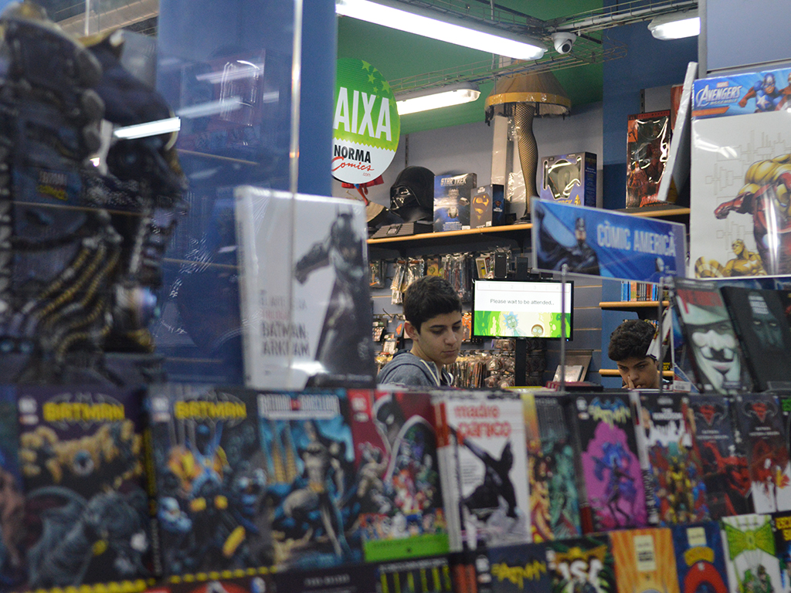
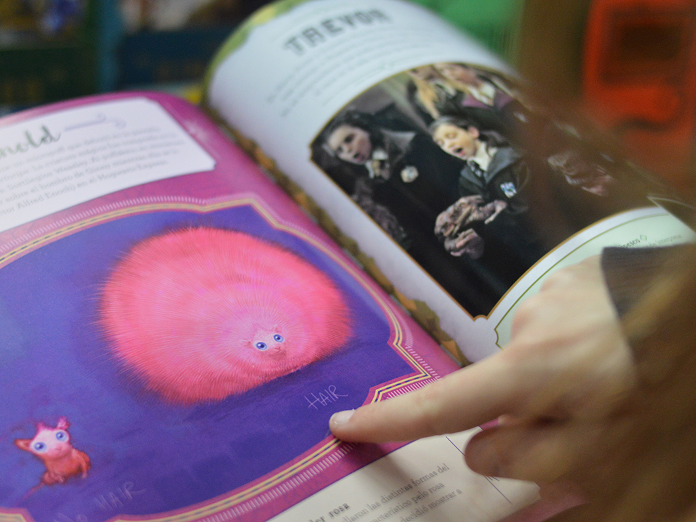
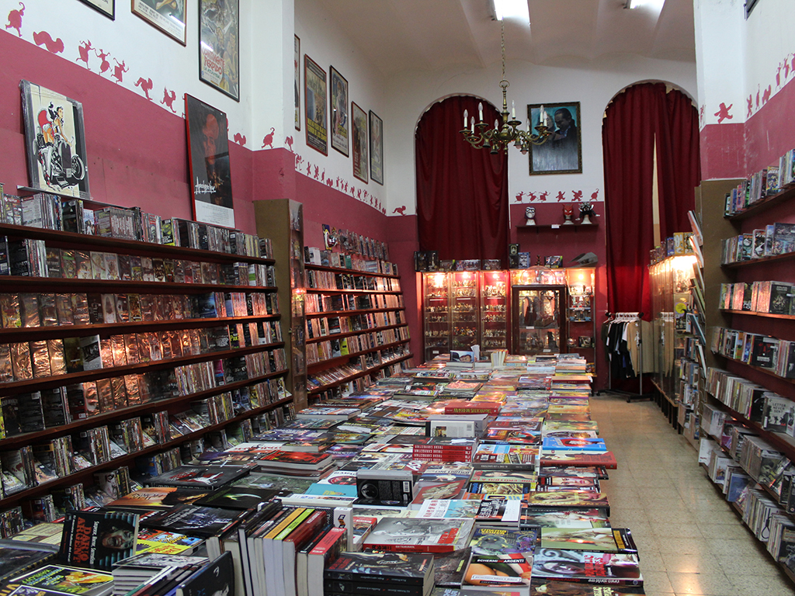
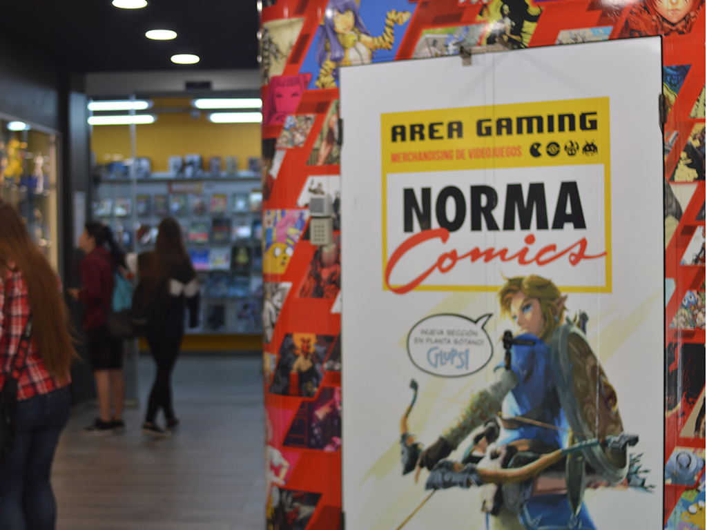
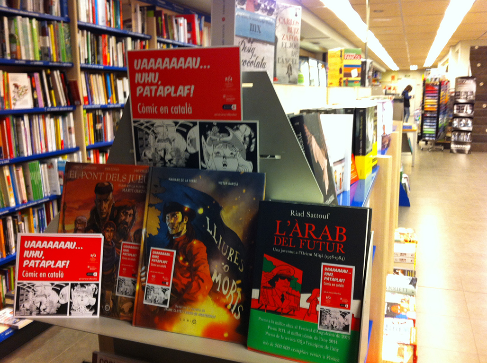
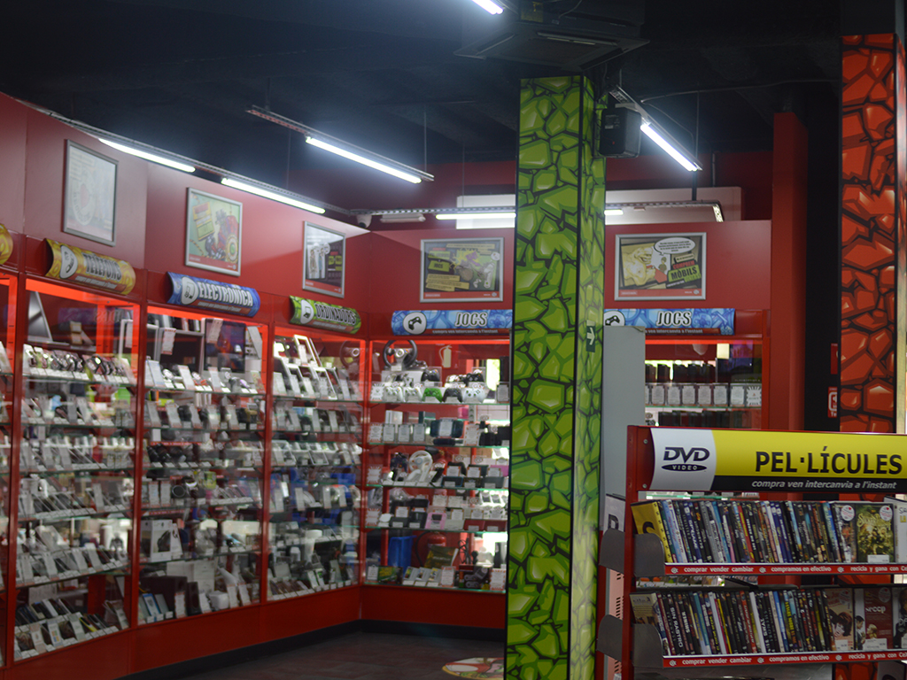
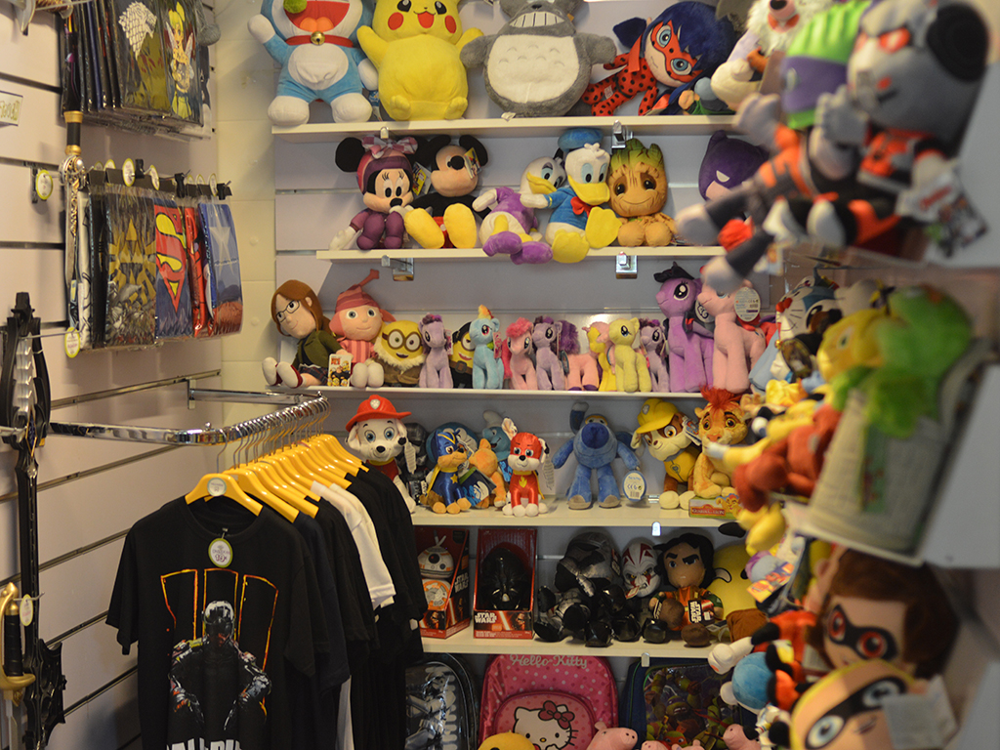

Llibreries
T’agraden els llibres? Ets més de fantasia o ciència ficció? Còmic asiàtic o americà? Si ets un amant de la cultura friki impresa en paper, ja saps que sigui quin sigui la teva elecció serà l’adequada! Aquí trobaràs una àmplia gamma de botigues que et poden fer viatjar a diferents països, mons o fins i tot a una altra realitat.
A més de llibres algunes de les botigues que et donarem venen temporades completes d’animacions japoneses traduïda a diferents idiomes.
 Freaks
Llibres i pel·lícules, que més es pot demanar? En Freaks tens una àmplia varietat de llibres cinèfils, especialment en les pel·lícules d’acció i terror. A més d’aquestes categories podem trobar de la cultura nipona i mes.
Gigamesh
Una llibreria on pots tovar de tot; acció, aventura, drama tot i està en aquest món on regna la fantasia. A més aquesta llibreria conta a part de llibres en català o en castellà, amb diversos idiomes com l’anglès.
Norma Comics
TTenda on lo friki ha inundat tot l’establiment. Aquesta botiga compta amb dues plantes:
La principal, on es poden apreciar còmics americans, figuretes i raconets especials per alguna saga famosa, com Harry Potter, Rick & Morty, Stranger Things i més.
A la segona planta de l’edifici i trobarem l’apartat anime, on podrem trobar toms i merchandising de les animacions nipones.
Aquesta editorial també compta amb la cafeteria Glups! (més informació en l’apartat de restaurants).
Chunichi Comics
Aquest lloc especialitzat en articles japonesos i coreans, et porta varietat de manga, anime, música i marxandatge del millor que és al mercat, amb preus raonables per a la teva cartera.
Cex
Aquest és un establiment especialitzat en la branca de la informàtica i tecnologia. Aquí trobaràs des de components per al PC fins consoles o videojocs a bons preus que no podras deixar escapar.
Fantasy the Store
En Fantasy trobaràs gran varietat d’articles de pel·lícules o sèries. Des de peces de vestir, fins maquetes que pots construir teu mateix. Aquesta botiga compta amb una especialitat que no tenen els altres, compta amb la seva pròpia màquina de realitat virtual! I la podràs fer servir un cop acumulis punts per les compres.
